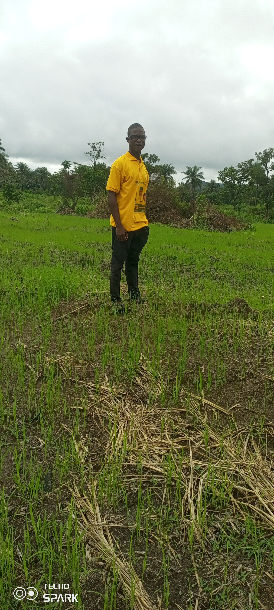
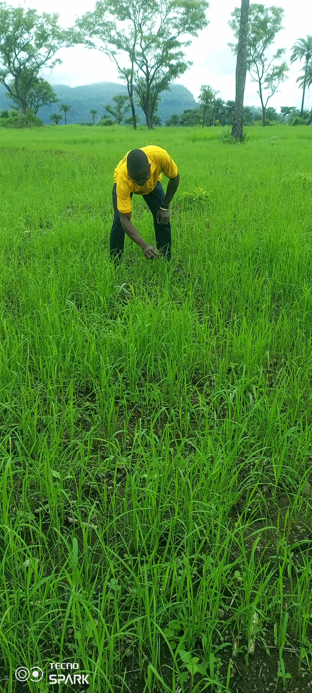
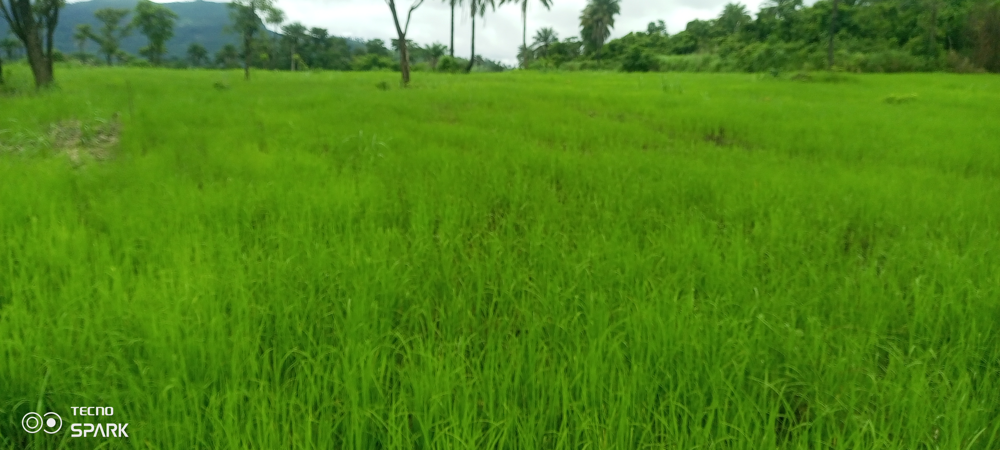

Rice Farming By Lamin Kamara
Explore Top Tools And Websites For Sustainable And Efficient Rice Farming in Sierra Leone.
  
Featured Resources In KONO
Rice Farming By KUST STUDEND
SOA CHIFEDOWN Rice Platform (SRP)
Kassyama Rice farmers (IRRI)
IRRI Rice Knowledge Bank
CarbonFarm
Kubota Smart Agriculture